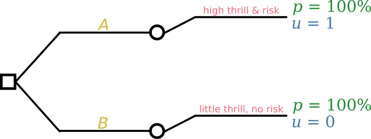

36 Utilities
\(\DeclarePairedDelimiter{\set}{\{}{\}}\)
36.1 From inferences to decisions
At long last we have seen how an agent can calculate the probabilities of any kind of sentence, given any facts and assumptions available to it. We studied this probability calculation for general problems, and then more in detail for problems enjoying special properties, for instance when the agent’s beliefs are exchangeable (chapter 28). Most important, we saw how previous data and background information can be used to determine, and at the same time affect, these probabilities. We have even built a real, prototype agent that can flexibly calculate probabilities in problems involving nominal variates.
Having rational degrees of belief about all possible hypotheses and unknowns is useful, and the first step in scientific research. But often it isn’t enough. Often the agent needs to act, to do something, to make a choice, even if its uncertainty has not disappeared and therefore it can’t be sure of what its choice will lead to. Our very first example of engineering problem (chapter 1) involved the decision on whether to accept or discard an electronic component just produced in an assembly line, not knowing whether it will fail within a year or not.
In chapter 3 we met the theory to deal with this kind of decision-making problem: Decision Theory.
Decision Theory requires the decision-making agent to calculate the probabilities of the unknown outcomes. Now we know how to do that, at least in some kinds of problems! Most of our discussion so far focused on the calculation of those probabilities, which often is the most difficult part of the decision-making task.
So let’s face the decision-making problem again at last, and complete the construction of our prototype agent by implementing the final decision-making step.1
1 Please go back to chapter 3 and review the notions and terminology introduced there.
36.2 Review of a basic decision problem: outcomes, decisions, utilities
Recall the structure of a basic decision:

In order to make a decision, the agent needs:
The set of possible decisions, which we represent as sentences like \(\mathsfit{\color[RGB]{204,187,68}D}\).
The set of possible outcomes, whose truth is unknown to the agent. In the kind of decision problems that we are examining, the outcomes correspond to the possible values \(\color[RGB]{238,102,119}Y\mathclose{}\mathord{\nonscript\mkern 0mu\textrm{\small=}\nonscript\mkern 0mu}\mathopen{}y\) of what we have called the predictand variate from § 27.2 onwards.
The probabilities of the outcomes \(\mathrm{P}({\color[RGB]{238,102,119}Y\mathclose{}\mathord{\nonscript\mkern 0mu\textrm{\small=}\nonscript\mkern 0mu}\mathopen{}y} \nonscript\:\vert\nonscript\:\mathopen{} \mathsfit{\color[RGB]{204,187,68}D}\mathbin{\mkern-0.5mu,\mkern-0.5mu}{\color[RGB]{34,136,51}X\mathclose{}\mathord{\nonscript\mkern 0mu\textrm{\small=}\nonscript\mkern 0mu}\mathopen{}x} \mathbin{\mkern-0.5mu,\mkern-0.5mu}\mathsfit{\color[RGB]{34,136,51}data}\mathbin{\mkern-0.5mu,\mkern-0.5mu}\mathsfit{I})\) which are determined by the agent’s background information \(\mathsfit{I}\), by any other available information, such as \(\mathsfit{\color[RGB]{34,136,51}data}\) about previously observed units and the values of some predictor variates \(\color[RGB]{34,136,51}X\mathclose{}\mathord{\nonscript\mkern 0mu\textrm{\small=}\nonscript\mkern 0mu}\mathopen{}x\) for the current unit; and possibly also by the agent’s decision \(\mathsfit{\color[RGB]{204,187,68}D}\) (see below).
The utilities of each pair of decision and outcome \((\mathsfit{\color[RGB]{204,187,68}D}\mathbin{\mkern-0.5mu,\mkern-0.5mu}{\color[RGB]{238,102,119}Y\mathclose{}\mathord{\nonscript\mkern 0mu\textrm{\small=}\nonscript\mkern 0mu}\mathopen{}y})\).
Some texts call the joint pair \(({\color[RGB]{238,102,119}Y\mathclose{}\mathord{\nonscript\mkern 0mu\textrm{\small=}\nonscript\mkern 0mu}\mathopen{}y} \mathbin{\mkern-0.5mu,\mkern-0.5mu}\mathsfit{\color[RGB]{204,187,68}D})\), or equivalently \((\mathsfit{\color[RGB]{204,187,68}D}\mathbin{\mkern-0.5mu,\mkern-0.5mu}{\color[RGB]{238,102,119}Y\mathclose{}\mathord{\nonscript\mkern 0mu\textrm{\small=}\nonscript\mkern 0mu}\mathopen{}y})\), of a decision and an outcome, a consequence. We adopt this terminology from this chapter onward.
Let’s not forget some important points about the notions above:
In what follows we shall consider problems, such as classification, where knowledge of the agent’s decision is irrelevant to the outcome’s probability. We shall nevertheless keep the more general notation \(\mathrm{P}({\color[RGB]{238,102,119}Y\mathclose{}\mathord{\nonscript\mkern 0mu\textrm{\small=}\nonscript\mkern 0mu}\mathopen{}y} \nonscript\:\vert\nonscript\:\mathopen{} \mathsfit{\color[RGB]{204,187,68}D}\mathbin{\mkern-0.5mu,\mkern-0.5mu}{\color[RGB]{34,136,51}X\mathclose{}\mathord{\nonscript\mkern 0mu\textrm{\small=}\nonscript\mkern 0mu}\mathopen{}x} \mathbin{\mkern-0.5mu,\mkern-0.5mu}\mathsfit{\color[RGB]{34,136,51}data}\mathbin{\mkern-0.5mu,\mkern-0.5mu}\mathsfit{I})\).
36.3 What are utilities?
In most decision-making problems the “gain” or “loss” or “satisfaction” or “desiderability” of the consequences depends on many different aspects. A person purchasing some item may have to choose between something inexpensive but of low quality, or something of high quality but expensive. A clinical patient may have to choose between a treatment that increases life expectancy but worsens the quality of life, or a treatment that improves the quality of life but decreases life expectancy.
Decision Theory says that whenever an agent makes a decision among alternatives having heterogeneous decision aspects, then it is implicitly using only one real number to summarize and bring together all those aspects. If this weren’t true, the agent would be deciding in an irrational way, which could even be exploited against the agent itself.
Such idea is not counter-intuitive in our culture. We are wont, for example, to exchange money for things of wildly different kinds: food, entertainment, health, work, transport, communication, life insurance, knowledge, political power. The monetary value of a human life (“value of statistical life”) for some governments is about USD 10 000 000.
2 With the opposite convention we speak of disutility or loss.
Utility is the name we give to the real number that encodes together all heterogeneous desirabilities and gains of a consequence. The convention is that the higher the utility, the more preferable is the consequence.2
Notation
We denote the utility of the consequence \((\mathsfit{\color[RGB]{204,187,68}D}\mathbin{\mkern-0.5mu,\mkern-0.5mu}{\color[RGB]{238,102,119}Y\mathclose{}\mathord{\nonscript\mkern 0mu\textrm{\small=}\nonscript\mkern 0mu}\mathopen{}y})\) as
\[ \mathrm{U}(\mathsfit{\color[RGB]{204,187,68}D}\mathbin{\mkern-0.5mu,\mkern-0.5mu}{\color[RGB]{238,102,119}Y\mathclose{}\mathord{\nonscript\mkern 0mu\textrm{\small=}\nonscript\mkern 0mu}\mathopen{}y} \nonscript\:\vert\nonscript\:\mathopen{} \mathsfit{I}) \]
This notation reminds us that the utilities assigned by an agent depend on the agent’s background information \(\mathsfit{I}\).
The utilities for all consequences can be encoded in a utility matrix \(\boldsymbol{\color[RGB]{68,119,170}U}\), having one row per decision and one column per outcome:
\[ \boldsymbol{\color[RGB]{68,119,170}U}\coloneqq \begin{bmatrix} \mathrm{U}(\mathsfit{\color[RGB]{204,187,68}D}' \mathbin{\mkern-0.5mu,\mkern-0.5mu}{\color[RGB]{238,102,119}Y\mathclose{}\mathord{\nonscript\mkern 0mu\textrm{\small=}\nonscript\mkern 0mu}\mathopen{}y}' \nonscript\:\vert\nonscript\:\mathopen{} \mathsfit{I}) & \mathrm{U}(\mathsfit{\color[RGB]{204,187,68}D}' \mathbin{\mkern-0.5mu,\mkern-0.5mu}{\color[RGB]{238,102,119}Y\mathclose{}\mathord{\nonscript\mkern 0mu\textrm{\small=}\nonscript\mkern 0mu}\mathopen{}y}'' \nonscript\:\vert\nonscript\:\mathopen{} \mathsfit{I}) & \dotso \\ \mathrm{U}(\mathsfit{\color[RGB]{204,187,68}D}'' \mathbin{\mkern-0.5mu,\mkern-0.5mu}{\color[RGB]{238,102,119}Y\mathclose{}\mathord{\nonscript\mkern 0mu\textrm{\small=}\nonscript\mkern 0mu}\mathopen{}y}' \nonscript\:\vert\nonscript\:\mathopen{} \mathsfit{I}) & \mathrm{U}(\mathsfit{\color[RGB]{204,187,68}D}'' \mathbin{\mkern-0.5mu,\mkern-0.5mu}{\color[RGB]{238,102,119}Y\mathclose{}\mathord{\nonscript\mkern 0mu\textrm{\small=}\nonscript\mkern 0mu}\mathopen{}y}'' \nonscript\:\vert\nonscript\:\mathopen{} \mathsfit{I}) & \dotso \\ \dotso&\dotso&\dotso \end{bmatrix} \]
Continuous case
In some decision-making problems the set of possible decisions can be considered as continuous.
A power-plant operator, for example, may have to decide to supply an amount of power between 100 MW and 200 MW to a geographical region in the next hour. The unknown “outcome” \(\color[RGB]{238,102,119}Y\) in this scenario may be the power demand, which could be in the same range. In this case we can represent a decision by a statement \(\color[RGB]{204,187,68}D\mathclose{}\mathord{\nonscript\mkern 0mu\textrm{\small=}\nonscript\mkern 0mu}\mathopen{}d\), such as
\[\color[RGB]{204,187,68}D\mathclose{}\mathord{\nonscript\mkern 0mu\textrm{\small=}\nonscript\mkern 0mu}\mathopen{}175\,\mathrm{MW}\]
(where “\(\mathclose{}\mathord{\nonscript\mkern 0mu\textrm{\small=}\nonscript\mkern 0mu}\mathopen{}\)” obviously stands for “set to”, not “is observed to be equal to”; recall § 6.3?)
In such continuous cases we speak of a utility function
\[\mathrm{u}({\color[RGB]{204,187,68}d} \mathbin{\mkern-0.5mu,\mkern-0.5mu}{\color[RGB]{238,102,119}y} \nonscript\:\vert\nonscript\:\mathopen{} \mathsfit{I})\]
A typical, extremely abused utility function is the negative squared loss:
\[ \mathrm{u}({\color[RGB]{204,187,68}d} \mathbin{\mkern-0.5mu,\mkern-0.5mu}{\color[RGB]{238,102,119}y}\nonscript\:\vert\nonscript\:\mathopen{} \mathsfit{I}_{\textrm{sl}}) = -\abs{{\color[RGB]{204,187,68}d} - {\color[RGB]{238,102,119}y}}^2 \]
stating that the utility decreases as the squared difference between \(\color[RGB]{204,187,68}d\) and \({\color[RGB]{238,102,119}y}\). In concrete problems it is worthwhile to think of more realistic and problem-specific utility functions. In the power-plant scenario, for example, the utility could be worse if the power output is below the power demand, than above. This could be expressed by a function like
\[ \mathrm{u}({\color[RGB]{204,187,68}d} \mathbin{\mkern-0.5mu,\mkern-0.5mu}{\color[RGB]{238,102,119}y}\nonscript\:\vert\nonscript\:\mathopen{} \mathsfit{I}_{\textrm{plant}}) = \begin{cases*} -2\,\abs{{\color[RGB]{204,187,68}d} - {\color[RGB]{238,102,119}y}}^2 & if ${\color[RGB]{204,187,68}d} < {\color[RGB]{238,102,119}y}$ \\[1ex] -\abs{{\color[RGB]{204,187,68}d} - {\color[RGB]{238,102,119}y}}^2 & if ${\color[RGB]{204,187,68}d} \ge {\color[RGB]{238,102,119}y}$ \end{cases*} \]
or some other asymmetric function.
36.4 How to determine utilities?
It can be quite difficult to assess the utilities of the decisions and outcomes in a decision-making problems, because of reasons such as heterogeneity or uncertainty, discussed below. Yet, Decision Theory says that any decision is either implicitly using such a number, or is sub-optimal or logically inconsistent. Moreover, the specification, at some level, of utilities not derived by further analysis is simply unavoidable – just like the specification of some initial probabilities.
Heterogeneous factors
Many heterogeneous factors can enter the determination of utilities. In medical decision-making problems, for example, a clinician must choose one among several possible treatments for a patient, and the utilities of the outcome must take into account factors such as
- cost of the treatment
- expected life length resulting from the treatment
- quality of life resulting from the treatment
- patient’s preferences and attitudes towards life
It can be very difficult to combine these factors into a single number.
Several fields, such as medicine, have developed and refined several methodologies to arrive at utilities that account for all important factors. Unfortunately we shall not explore any of them in these notes.
Uncertainty
The assessment of utilities can also be affected by uncertainties, and therefore become an inference problem in itself. The utility of an outcome may depend on further decisions and further outcomes, whose utilities in turn depend on further decisions and outcomes. Our basic decision framework can in this case be applied repeatedly, as briefly discussed below. In the simplest case, if the agent is uncertain between utility values \(\color[RGB]{68,119,170}\boldsymbol{\color[RGB]{68,119,170}U}'\) with probability \(p'\), and utility values \(\color[RGB]{68,119,170}\boldsymbol{\color[RGB]{68,119,170}U}''\) with probability \(p'' = 1-p'\), then the utilities to use are the averages
\[p'\,{\color[RGB]{68,119,170}\boldsymbol{\color[RGB]{68,119,170}U}'} + p''\,{\color[RGB]{68,119,170}\boldsymbol{\color[RGB]{68,119,170}U}''}\]
But the specification, at some level, of utilities not derived by further inferences is simply unavoidable – just like the specification of some initial probabilities.
Approximate assignments
An approximate procedure of assigning utilities goes as follows:
In the procedure above, the values \(\color[RGB]{68,119,170}1\) and \(\color[RGB]{68,119,170}0\) for the best and worst consequences are arbitrary: they correspond to setting a zero and a measurement unit of your utility scale. You can choose any other pair of values \({\color[RGB]{68,119,170}u_{\textrm{max}}} > {\color[RGB]{68,119,170}u_{\textrm{min}}}\). The procedure applies in the same way, but the utility corresponding to \(p^{+}\) is then given by
\[{\color[RGB]{68,119,170}u}= p^{+}\cdot{\color[RGB]{68,119,170}u_{\textrm{max}}} + (1-p^{+})\cdot {\color[RGB]{68,119,170}u_{\textrm{min}}} \]
The assessment of initial utilities constitutes a field under active development (see references below), usually called utility elicitation.
36.5 Utilities as evaluation metric
The utilities of the consequences not only allow the agent to determine the optimal decision, as we shall see in the next chapter. They also allow us to quantify how much utility an agent yielded in a concrete application or sequence of applications of a specific decision-making task.
Since the possible gains and losses of a specific problem are encoded in the problem-specific utilities \(\boldsymbol{\color[RGB]{68,119,170}U}\), these utilities quantify by definition how much has been gained or lost in solving the problem.
Suppose that in the first instance of a decision-making task the agent makes decision \(\mathsfit{\color[RGB]{204,187,68}D}_1\), and in that instance the outcome \({\color[RGB]{238,102,119}Y}_1\) turns out to be \({\color[RGB]{238,102,119}y}_1\) (this may be discovered a long time after the decision was made). The utility (possibly a loss) gained at that instance is then, by definition,
\[ \mathrm{U}(\mathsfit{\color[RGB]{204,187,68}D}_1 \mathbin{\mkern-0.5mu,\mkern-0.5mu}{\color[RGB]{238,102,119}Y_{\color[RGB]{0,0,0}1}\mathclose{}\mathord{\nonscript\mkern 0mu\textrm{\small=}\nonscript\mkern 0mu}\mathopen{}y_{\color[RGB]{0,0,0}1}} \nonscript\:\vert\nonscript\:\mathopen{} \mathsfit{I}) \]
Assuming that the utilities are additive over instances3, then the total utility yield for instances \(i=1,2,\dotsc,M\) is
3 if they weren’t, the whole decision-making scheme of the next chapter should be changed, but a similar approach would still apply
\[ \sum_{i=1}^{M} \mathrm{U}(\mathsfit{\color[RGB]{204,187,68}D}_i \mathbin{\mkern-0.5mu,\mkern-0.5mu}{\color[RGB]{238,102,119}Y_{\color[RGB]{0,0,0}i}\mathclose{}\mathord{\nonscript\mkern 0mu\textrm{\small=}\nonscript\mkern 0mu}\mathopen{}y_{\color[RGB]{0,0,0}i}} \nonscript\:\vert\nonscript\:\mathopen{} \mathsfit{I}) \]
and the average utility yield per instance is
\[ \frac{1}{M} \sum_{i=1}^{M} \mathrm{U}(\mathsfit{\color[RGB]{204,187,68}D}_i \mathbin{\mkern-0.5mu,\mkern-0.5mu}{\color[RGB]{238,102,119}Y_{\color[RGB]{0,0,0}i}\mathclose{}\mathord{\nonscript\mkern 0mu\textrm{\small=}\nonscript\mkern 0mu}\mathopen{}y_{\color[RGB]{0,0,0}i}} \nonscript\:\vert\nonscript\:\mathopen{} \mathsfit{I}) \]
Use in a test set
The utility yield can be calculated in a test run of the agent, to check whether its operation meets its specifications and expectations, or even to compare the performance of different agents.
For the test run we need a set of data \(i=1,2,\dotsc,M\) (which should come from the same population underlying the real application, see § 23.3) for which the actual outcomes \({\color[RGB]{238,102,119}Y_{\color[RGB]{0,0,0}i}\mathclose{}\mathord{\nonscript\mkern 0mu\textrm{\small=}\nonscript\mkern 0mu}\mathopen{}y_{\color[RGB]{0,0,0}i}}\) are known, and for which any predictors \({\color[RGB]{34,136,51}X_{\color[RGB]{0,0,0}i}\mathclose{}\mathord{\nonscript\mkern 0mu\textrm{\small=}\nonscript\mkern 0mu}\mathopen{}x_{\color[RGB]{0,0,0}i}}\) are also available, so that they can be used by the agents under evaluation.
Each agent is then applied to these data: it is given the predictors \({\color[RGB]{34,136,51}X_{\color[RGB]{0,0,0}i}\mathclose{}\mathord{\nonscript\mkern 0mu\textrm{\small=}\nonscript\mkern 0mu}\mathopen{}x_{\color[RGB]{0,0,0}i}}\), and from these it will determine and possibly execute the optimal decision \(\mathsfit{\color[RGB]{204,187,68}D}_i\), for all \(i\). The total or average utility yield generated by the agent is then given by the formula above.
The test utility yield of an agent can be examined to uncover possible design flaws (say, wrong background information, or programming bugs). The yields of different agents can be compared to decide which is most appropriate to the task.
We will return to this use of the utility matrix in chapter 39, when we discuss some evaluation metrics typical of present-day machine-learning methodology.
36.6 Utilities and probabilities must be independent
The independence (or “sure-thing”) axiom of Decision Theory says that the utilities cannot be functions of the probabilities. In other words, an agent cannot assign higher or lower utility to some outcome just because its probability is higher or lower (or vice versa) than the probability of another outcome. The converse also holds: the probability of an outcome cannot be judged higher or lower just because the outcome is more or less desirable (or vice versa). Note that there may be some kind of relation between utilities and probabilities, but only because they refer to the same sentences, not because they are determined by each other’s numerical values.
A dependence of probabilities on utilities we recognize immediately as “wishful thinking”. But some researchers have from time to time objected that the dependence of utilities on probabilities could be rationally justified, and have proposed alleged counterexamples (usually called “paradoxes”) to prove their objection. The most famous are Allais’s and Ellsberg’s paradoxes.
Examination of these would-be counterexamples show that they actually contain logical inconsistencies of various kind. Here we want to emphasize one particular kind of mistake: they base utilities on particular aspects of the decision-making problem, but then use the probabilities of different aspects. Let’s show this inconsistency with an extreme example that illustrates it clearly.
Suppose a person is asked to make a decision between two bets or lotteries \(\mathsfit{\color[RGB]{204,187,68}A}\) and \(\mathsfit{\color[RGB]{204,187,68}B}\):
- \(\mathsfit{\color[RGB]{204,187,68}A}\): 50% probability of winning or losing nothing, and 50% probability of losing 10 000 $ (or an amount that’s high for the person’s economy)
- \(\mathsfit{\color[RGB]{204,187,68}B}\): 90% probability of winning 100 $, and 10% probability of winning or losing nothing
Before applying decision theory to this problem we need to assess which factors affect the utilities of this person. It turns out that this person is a gambler: she only cares about the “thrill & risk” of a consequence, and she doesn’t care about losing money.
A hasty and naive application of decision theory could represent the problem with the following tree:

and the decision with maximal expected utility would be \(\mathsfit{\color[RGB]{204,187,68}B}\). But the gambler obviously prefers \(\mathsfit{\color[RGB]{204,187,68}A}\). A critic of Decision Theory would then say that this happens because, contrary to the axiom of independence, we should allow the utilities to depend on the probabilities, which are more uncertain for \(\mathsfit{\color[RGB]{204,187,68}A}\) than for \(\mathsfit{\color[RGB]{204,187,68}B}\).
But the above application is wrong and illogical. In the representation above, the probabilities refer to the monetary outcome; but we said that the gambler doesn’t care about losing money. If “thrill & risk” is the factor that determines the utilities, then the probabilities should be about that same factor.
For the gambler, choosing \(\mathsfit{\color[RGB]{204,187,68}B}\) leads for certain to a situation with little “thrill” (the winning outcome is almost sure) and no risk (no money will be lost in any case). Choosing \(\mathsfit{\color[RGB]{204,187,68}A}\) instead leads for certain to a situation with high “thrill” (completely uncertain outcome) and high risk (huge money loss). The second situation has higher relative utility than the first. The correct representation of the decision problem is therefore like this:

Note that the utilities do not depend on the probabilities, exactly as required by the independence axiom. The principle of maximal expected utility leads to decision \(\mathsfit{\color[RGB]{204,187,68}A}\), the gambler’s favourite. Also note that the relevant probabilities are not the ones (about money winnings) mentioned in the initial statement of the problem. Just because we read or hear the word “probability” doesn’t mean that that’s the probability we need.
This would-be counterexample therefore vindicates Decision Theory. The problem was not in the axiom of independence, but in the fact that the framework was illogically applied. The “need” to break the axiom of independence to recover the intuitively correct solution (basically correcting an error with another error) was actually a warning sign that some illogical reasoning was taking place.
In more realistic situations, both utilities and probabilities must refer to a combination of monetary value and other factors, such as emotional ones. What’s important in any case is that they refer to the same factors. So to speak: if you say that you like oranges and don’t care about apples, then you should worry about how many oranges, not apples, there are.
This example, even if somewhat exaggerated, reminds us of two caveats that we have repeated several times in these notes:
It is important to enquire what the exact goals and whys of an engineering or data-science problem really are. Otherwise you may end up wasting a lot of time developing the correct solution to the wrong problem.
Don’t let yourself be deceived by words and technical terms. Try to understand the essence of the problem that lies beyond its verbal description.
In chapter 39 we shall see that some common evaluation metrics in machine learning actually break the independence axiom, and should therefore be avoided.